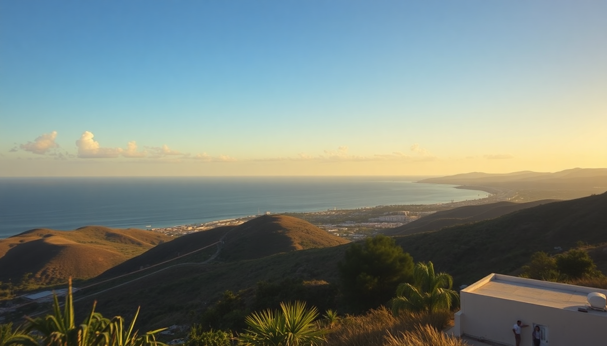

Getting Around Mexico: Buses, Flights, Car Rentals & Ferries

I learned the hard way that Mexico’s size is deceptive. My first trip, I tried to drive from Cancun to Oaxaca in a single day. I didn’t make it. After three years of bouncing between these five cities, I’ve figured out which transport mode works for each leg. Here’s what actually works.
Is ADO the best bus company for long distances in Mexico?
Yes, ADO is the gold standard for intercity buses in the southeast. I’ve used them from Cancun to Playa del Carmen, Tulum, and even all the way to Mexico City. The buses are clean, air-conditioned (sometimes too cold—bring a hoodie), and have onboard bathrooms that don’t make you gag.
For the Cancun–Playa del Carmen route, ADO runs every 30 minutes and costs about $10 USD. The ride takes 1 hour door-to-door. For Cancun to Tulum, it’s 2 hours and roughly $15. The ADO First Class buses have reclining seats and a snack service. Avoid the “Platinum” class unless you need a meal tray; it’s not worth the extra $5.
- Cancun to Playa del Carmen: 1 hour, $10, every 30 minutes
- Cancun to Tulum: 2 hours, $15, hourly
- Mexico City to Oaxaca: 7 hours overnight, $35, book the ADO GL class for wider seats
- Book tickets at the ADO Terminal in Cancun’s downtown or online at their official site—don’t use third-party resellers
Should I fly between Mexico City and Oaxaca instead of taking the bus?
Absolutely. That 7-hour overnight bus sounds romantic until you wake up stiff and smelling like diesel. I flew Volaris from Mexico City’s Benito Juárez International Airport (MEX) to Oaxaca’s Xoxocotlán Airport (OAX) for $45 one-way. The flight takes 1 hour 15 minutes. Factor in airport time, and you’re still ahead by four hours.
The airport in Oaxaca is tiny—you’ll walk from the gate to the curb in three minutes. I stayed at Hotel Azul Oaxaca in the Centro neighborhood, and the taxi from the airport cost 150 pesos flat (about $8). Pre-book a taxi at the official booth inside arrivals; the guys outside will try to charge double.
- Volaris and Viva Aerobus both fly this route; book 2-3 weeks ahead for best prices
- Checked bags cost extra on both airlines—pack a carry-on
- Aeromexico is pricier but includes a free carry-on and snack
- Avoid flying through Cancun International if you’re going Oaxaca–Cancun; the layover often adds 6 hours
Is renting a car in Cancun worth the hassle?
It depends on where you’re going. If you’re staying in the Hotel Zone and taking ADO to Tulum, skip the rental. But if you want to visit Cenote Suytun (45 minutes from Cancun) or Cenote Ik Kil (near Chichén Itzá), a car saves you from negotiating with colectivos.
I rented from EasyWay at Cancun Airport. They’re a local company with no hidden fees—unlike the big chains that tack on mandatory liability insurance for $30/day. My rental for a week cost $220 total, including full insurance. The catch: you need a credit card with a hold of $1,500. They accepted my Chase Sapphire Preferred without issue.
- EasyWay at Cancun Airport: $220/week, full insurance included
- America Car Rental in Playa del Carmen: cheaper but older cars
- Driving the 307 Highway from Cancun to Tulum is straight but full of topes (speed bumps) in every town
- Toll road 180D from Cancun to Mérida is fast but costs $30 each way
How do I get from Cancun to Playa del Carmen and Tulum without a car?
The best cheap option is the colectivo—shared vans that run along Highway 307. They leave from the ADO Terminal in Cancun’s downtown and from the Hotel Zone near the Fiesta Americana hotel. The van fills up (usually 8 passengers) and drops you anywhere along the route.
A colectivo from Cancun to Playa del Carmen costs 60 pesos ($3.50) and takes 1.5 hours because they stop for passengers. From Playa to Tulum, it’s another 50 pesos and 45 minutes. I prefer this over ADO for short hops because you don’t need to buy a ticket in advance—just wave them down.
- Cancun to Playa del Carmen: 60 pesos, 1.5 hours, no booking needed
- Playa del Carmen to Tulum: 50 pesos, 45 minutes, runs every 15 minutes
- Flag them at marked stops along Avenida Tulum in Playa
- For Tulum Ruins, ask the driver to drop you at the entrance—it’s a 10-minute walk from the main gate
Should I take the ferry from Playa del Carmen to Cozumel?
Yes, but only if you plan to spend a full day on the island. The ferry is the only way to reach Cozumel, and it’s efficient. I took Ultramar from the Playa del Carmen Ferry Terminal at Calle 1 Sur. The ride takes 45 minutes and costs $18 each way. Buy a round-trip ticket—it’s the same price as two singles and saves you the return queue.
Cozumel itself is best explored by scooter or taxi. I rented a scooter from Rentadora Isis near the ferry dock for $30/day. Avoid the rental guys at the port exit; they’ll try to upsold you on a Jeep you don’t need.
- Ultramar ferry: $18 each way, departures every hour from 6 AM to 10 PM
- Winjet is the other operator; same price, slightly older boats
- Book tickets at the terminal—online prices are the same
- If you get seasick, sit on the upper deck and stare at the horizon
What’s the best way to get around Mexico City?
The Metro is cheap (5 pesos per ride, about $0.30) and covers almost everything. I used it to get from Zócalo to Chapultepec Park in 20 minutes. But it’s crowded during rush hour (7-9 AM and 5-7 PM). Avoid the Metro Line 1 if you’re claustrophobic—it’s the busiest.
For shorter trips, Uber is my go-to. A ride from Condesa to Coyoacán costs about 100 pesos ($5.50). Never take a street taxi unless it’s from an official sitio (stand). I got overcharged once by a taxi at the airport—$20 for a 10-minute ride. Uber from MEX airport to La Roma neighborhood costs $8.
- Metro: 5 pesos per ride, buy a rechargeable card at any station
- Uber: 80-150 pesos for most rides within the city
- Metrobús: 6 pesos, runs along Insurgentes Avenue—fast for north-south trips
- Ecotaxis in Coyoacán and Xochimilco: green taxis with fixed rates, safe for tourists
FAQ
Is it safe to drive at night in Mexico? I don’t recommend it outside city limits. Highway 307 between Cancun and Tulum is poorly lit, and livestock sometimes wander onto the road. Stick to daytime driving and use ADO or flights for overnight trips.
Do I need to book ADO buses in advance? For popular routes like Cancun to Tulum or Mexico City to Oaxaca, yes—book at least 24 hours ahead. You can do it online or at the terminal. Same-day tickets sell out, especially around holidays like Semana Santa.
Can I use my US driver’s license in Mexico? Yes, for rentals up to 30 days. But if you get pulled over, the police may ask for an International Driving Permit (IDP). I’ve never been asked, but I keep a photocopy of my passport and rental agreement in the glove box just in case.
Conclusion
- ADO buses are your best bet for Cancun–Playa del Carmen–Tulum; book first class for comfort
- Fly between Mexico City and Oaxaca—the 7-hour bus isn’t worth it
- Rent a car from EasyWay in Cancun only if you’re visiting cenotes or ruins off the ADO route
- Colectivos are the cheapest way to hop between beach towns; no booking needed
- Ultramar ferry to Cozumel is reliable, but rent a scooter on the island instead of a Jeep
- Metro and Uber work best in Mexico City; skip street taxis at the airport